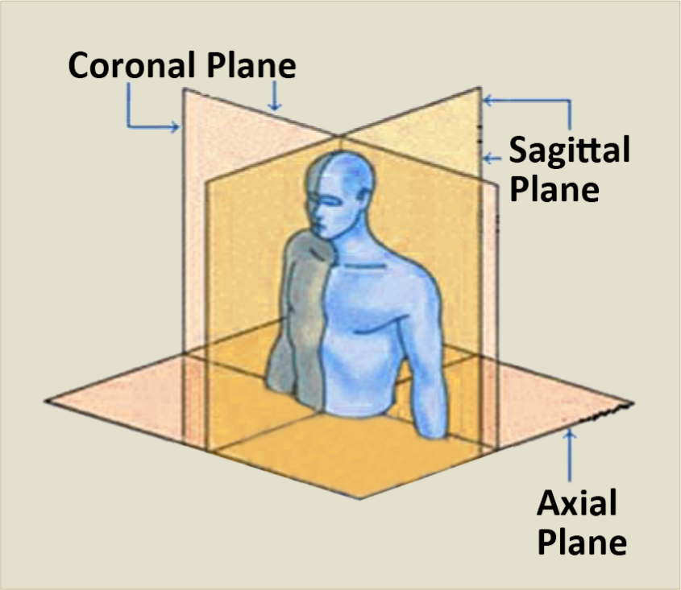
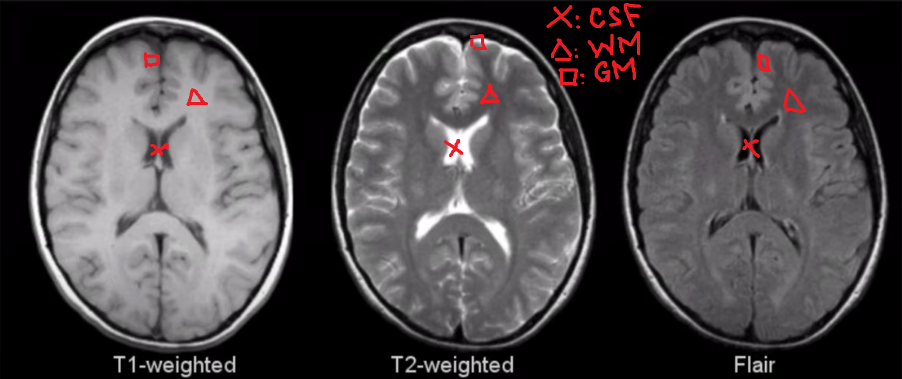
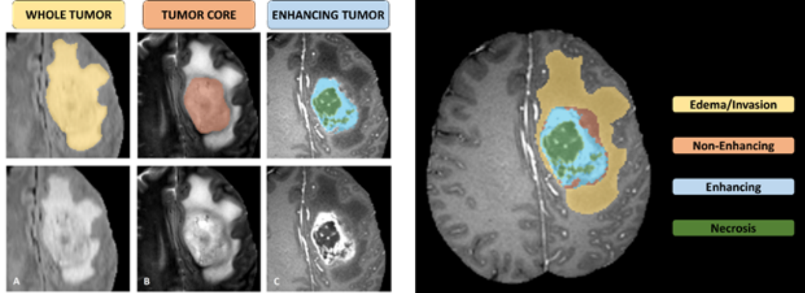

BraTS 2018: A Beginner's Guide to Brain Tumor MRI
MRI modalities, tumor sub-regions and annotation logic of the BraTS 2018 dataset, explained for ML people without a radiology background.
Brain tumor segmentation is an important task in medical image analysis. The BraTS (Brain Tumor Segmentation) challenge dataset is one of the most widely used benchmarks in the field. Brain imaging can be hard to start with, especially without a background in its medical terms and annotations. This post is a beginner’s guide to the BraTS 2018 dataset. It covers the basics of brain imaging and the annotations used in the data.
Jargon explanation
Before the details, here is the jargon.
- Necrosis is the death of cells or tissues in the body, and in the context of BraTS data, it refers to the death of brain tissue, which can be caused by various factors such as injury, disease, or lack of oxygen.
- Peritumoral edematous/invaded tissue refers to the tissue surrounding a brain tumor that has become swollen or infiltrated by the tumor.
- Edema is a condition in which fluid accumulates in the tissue, causing swelling, and can be a result of various factors, including inflammation, injury, or disease.
- Peritumoral means around the tumor.
- In the context of gliomas (brain tumors that arise from glial cells), low-grade gliomas (LGG) are characterized by slower growth and less aggressive behavior, while high-grade gliomas (HGG) are characterized by faster growth and more aggressive behavior. Glioblastoma is the most aggressive type of HGG.
- The grade of a glioma is determined by the appearance of the tumor cells under a microscope and is used to predict the behavior of the tumor and guide treatment decisions.
- Low-grade gliomas are generally considered to have a better prognosis than high-grade gliomas, which are more likely to grow and spread rapidly, making them more difficult to treat.
- The grade can change over time, so regular monitoring and re-biopsy may be needed to find the current grade.
- The papers use axial slices by default. There are three kinds of slices:

Data descriptions
- Pre-operative MRI scans from multiple institutions that are multimodal, including:
- Native (T1)
- Post-contrast T1-weighted (T1Gd)
- T2-Weighted (T2)
- T2 Fluid Attenuated Inversion Recovery (FLAIR)
- Annotations for the following sub-regions:
- GD-enhancing tumors (ET, 4)
- Peritumoral edema (ED, 2)
- Necrotic and non-enhancing tumor (NCR/NET, 1)
- Data that has been pre-processed, including:
- Co-registration to the same anatomical template
- Interpolation to the same resolution (1mm^3)
- Skull-stripping
- The dataset was obtained from 19 institutions.
- Participants are allowed to use additional private data from their own institutions for data augmentation.
Compared to BraTS16 and sooner
- More routine 3T multimodal MRI scans that are significantly different from previous collections.
- All scans from the original TCIA (The Cancer Imaging Archive) glioma collections were radiologically assessed and categorized as pre- or post-operative.
- Experts annotated all pre-operative TCIA scans for the various sub-regions.
- This year, expert neuroradiologists evaluated the entire original TCIA glioma collections (TCGA-GBM, n=262 and TCGA-LGG, n=199).
- Each scan was categorized as pre- or post-operative, and all pre-operative TCIA scans (135 GBM and 108 LGG) were annotated by experts for the various glioma sub-regions.
- The annotated pre-operative scans were included in this year’s BraTS datasets.
Evaluation framework
- Manual segmentation labels of tumor sub-regions.
- Dice score, Hausdorff distance, sensitivity, specificity.
- BraTS12-13 are subsets of BraTS18, and people also calculate on these datasets, to compare with performances reported in the BraTS TMI.
- First place approach: 3D MRI brain tumor segmentation using autoencoder regularization.
- Clinical data of overall survival.
Brain imaging modalities quick comparison
Brain imaging modalities can help visualize different aspects of the brain and its tissues. The following are common MRI imaging techniques used for brain imaging, each providing different information about the brain:
- T1-weighted scan (T1Gd): This type of MRI scan is performed after the administration of a contrast agent (gadolinium, for example) and highlights areas of abnormal tissue. It enhances the visibility of certain structures, such as tumors and blood vessels.
- T2-weighted scan (T2): This type of MRI scan visualizes the brain’s white matter and fluid-filled spaces. It helps to identify conditions such as hydrocephalus, brain swelling, and multiple sclerosis.
- T2 Fluid Attenuated Inversion Recovery (T2-FLAIR): This type of MRI scan visualizes the brain’s white matter and fluid-filled spaces. It is performed after the application of a specific pulse sequence that helps to suppress the signal from cerebrospinal fluid, making it easier to visualize lesions and other abnormalities in the white matter.
It is common to use a combination of these scans to get a more complete picture of the brain and its structures. More information about brain imaging modalities can be found at this link.
How to differentiate between MRI brain modalities?

- Legends: - X: Cerebrospinal fluid (CSF) - Triangle: White matter (WM) (Inside / Near CSF) - Square: Gray matter (GM) (Outside / Far from CSF) To differentiate between MRI brain modalities, follow these steps:
- Choose axial slices of the MRI scan whose CSF is visible.
- Locate WM and GM:
- WM is located on top of the CSF
- GM is near the skull/brain border
- Determine the color of CSF:
- CSF is white: T2-weighted
- CSF is black: T1-weighted (aka T1Gd) or T2-FLAIR
- Determine the WM and GM colors:
- If they follow the logical sense (GM is gray and WM is white) or if WM is brighter than GM: T1.
- If they do not follow the logical sense: T2-FLAIR.
If you are still unclear, make sure to check out these two YouTube videos: Video1 and Video2.
Annotations and Structures

Labeled regions
Necrotic (NCR) and Non-Enhancing Tumor Core (NET, Label 1)
- Typically hypo-intense (darker) in T1Gd when compared to T1.
- NET has been merged with NCR (Label 1) to represent non-enhancing tumor regions, transitional/pre-necrotic, and necrotic regions that belong to the non-enhancing part of the TC, and are typically resected in addition to the AT.
Peritumoral Edematous/Invaded Tissue (ED, Label 2)
- Hyper-intense signal in T2-FLAIR, which includes the complete extent of the disease, including the TC and ED.
Active Tumor (AT) aka Enhancing Tumor (ET, Label 4)
- Biologically, AT represents regions where there is leakage of contrast through a disrupted blood-brain barrier, commonly seen in HGG.
- To delineate the AT in gliomas, it is recommended to use the T1Gd scans and the existing TC outline.
- Set an intensity threshold within this label to distinguish between the high-intensity AT and the low-intensity NET/NCR regions.
- Choroid plexus and hemorrhage areas should not be labeled as they can be identified by comparing them to the T1 scan.
Tumor sub-regions for evaluation:
Whole Tumor (WT)
- Visible in T2-FLAIR: this sub-region represents the complete extent of the disease, including the tumor core (TC) and the peritumoral edematous/invaded tissue (ED).
- It is the union of all available labels and is usually the largest with a relatively smooth shape. Manual delineations can be made every third slice.
Tumor Core (TC)
- Visible in T2: this sub-region includes the bulk of the tumor that is typically removed during surgery.
- It is the union of labels 1, 3 (unlabeled, merged with 1), and 4. Non-enhancing tumor regions must be checked for in this sub-region.
- Its boundaries can be delineated on every other slice.
- Once the TC boundaries are defined, the remaining WT will correspond to the ED sub-region (Label 2), which is described by a hyper-intense signal on the T2-FLAIR volumes.
Active Tumor aka Enhanced Tumor (AT/ET)
- Visible in T1Gd: this sub-region represents the active or enhancing tumor structures surrounding the cystic/necrotic components of the core.
- Areas in this sub-region show hyper-intensity (brighter) in T1Gd when compared to T1 and “healthy” white matter in T1Gd.
Remarks for Low Grade Gliomas (LGG)
- LGGs do not exhibit much contrast enhancement or peritumoral edema.
- LGGs have less blood-brain-barrier disruption, which results in less contrast leak during the scan.
- LGGs without an apparent enhancing tumor (ET) area should consider only the necrotic/non-enhancing tumor (NET) and vasogenic edema (ED) labels, by observing the texture or intensity on T2-FLAIR images.
- LGGs without ET and without obvious differences across modalities should consider only the NET label, distinguishing between normal and abnormal brain tissue.
Deducing segmentations takeaway points
- This is what the papers recommended:
- Start by delineating the sub-regions of interest from the outside tumor boundaries. In other words, begin with manual delineation of the abnormal signal in the T2-weighted images.
- Define the Whole Tumor (WT) and then address the Tumor Core (TC), including enhancing/non-enhancing/necrotic core.
- In more details, here are the steps and explanations:
- Start by inspecting the T2-FLAIR. Hyper-intense (bright) regions are ED (Label 2). Most of the time, ED are the outer boundaries of the Whole Tumor (WT).
- Since we have no Tumor Core (TC) ground truth, we will define it using its definition: the union of NCR/NET (Label 1, 3) and AT/ET (Label 4).
- We delineate the NCR/NET (Label 1, 3) and AT/ET at the same time using T1Gd, where:
- NCR/NET are hypo-intense (darker) regions (Also true when comparing to T1)
- AT/ET are hyper-intense (brighter) regions, most of the time encircling NCR/NET. (Also true when comparing to T1)
- These two regions appear together with significant contrast in T1Gd.
- The axial slices of T2 can either be used to:
- Refine the union of Label 1, 3, and 4 when delineate the TC using T1Gd.
- Pre-determine the outline of TC.
By following these steps, you can obtain both Label 1, 3, and 4 so that you can union them all and get TC.
If you want to learn more about the brain’s anatomy, I recommend visiting this site, which has clear visualizations. I sometimes update old posts to keep them up-to-date.
References
- Bakas, Spyridon, et al 2018 International MICCAI BraTS Challenge - CBICA MICCAI 2018.
- Bakas, Spyridon, et al Multimodal Brain Tumor Segmentation Challenge 2018 Section for Biomedical Image Analysis (SBIA) (2021).
- Bakas, Spyridon, et al Identifying the Best Machine Learning Algorithms for Brain Tumor Segmentation, Progression Assessment, and Overall Survival Prediction in the BRATS Challenge arXiv preprint arXiv:1811.02629 (2018).
- Bjoern H. Menze et al The Multimodal Brain Tumor Image Segmentation Benchmark (BRATS) IEEE Transactions on Medical Imaging (2015).
Cite this note
Tuan-Luc Huynh. (Feb 2023). BraTS 2018: A Beginner's Guide to Brain Tumor MRI. louisdo2108.github.io. https://louisdo2108.github.io/posts/brats2018/
@misc{huynh2023brats2018,
title = "BraTS 2018: A Beginner's Guide to Brain Tumor MRI",
author = "Huynh, Tuan-Luc",
year = "2023",
month = "Feb",
url = "https://louisdo2108.github.io/posts/brats2018/"
}